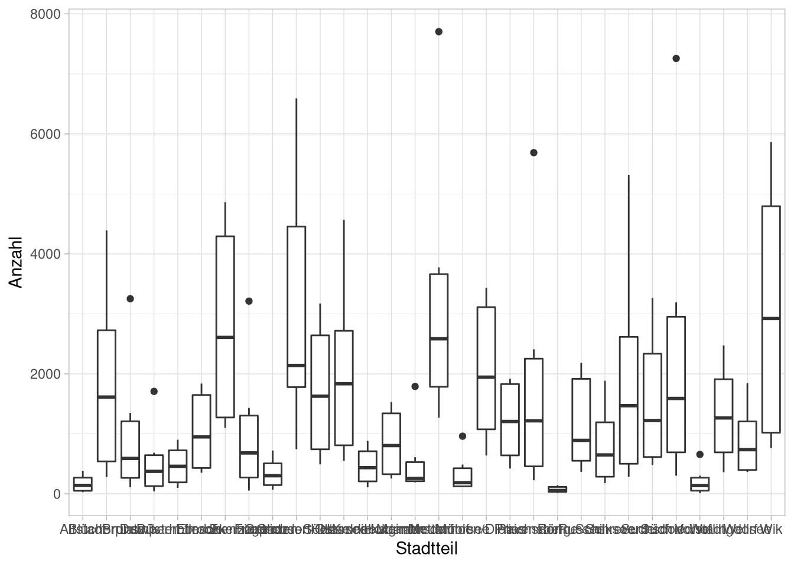
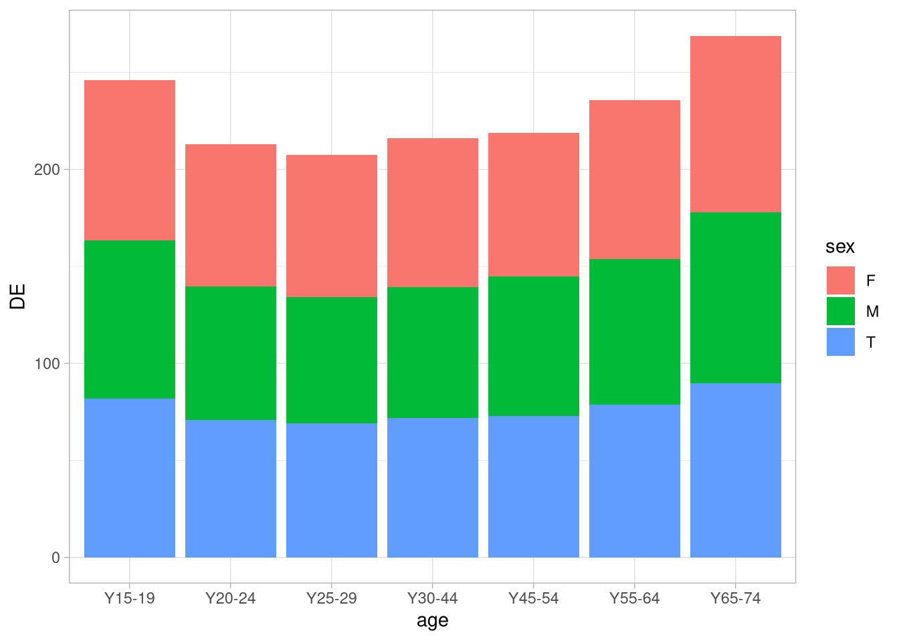
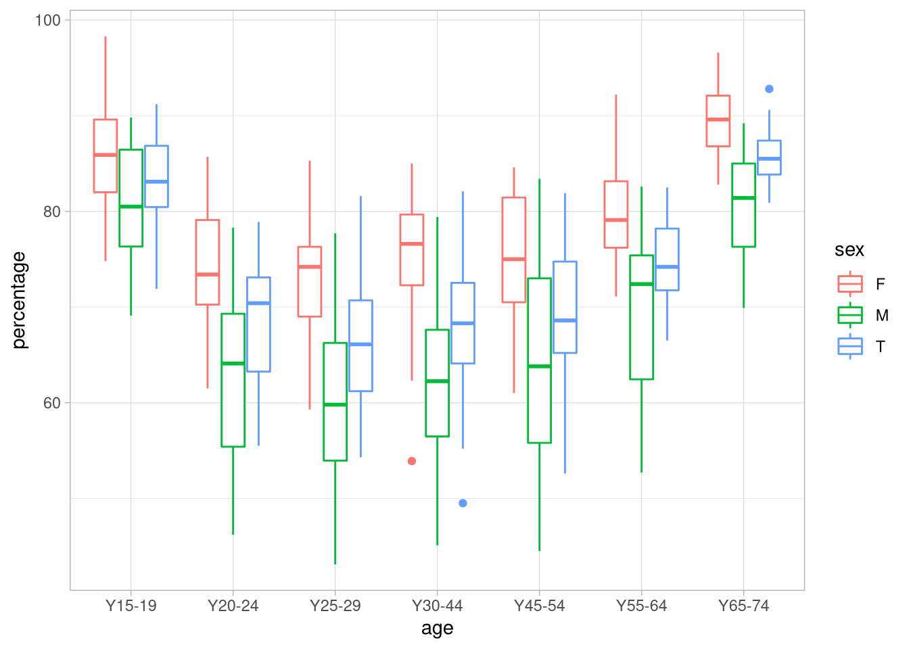

Abbildungen I
Organisatorisches
Semesterplan
| Einheit | Vorlesung | Übungswoche | Thema |
|---|---|---|---|
| 1 | 2.11.20 | keine Übung | Grundlagen und Begriffe |
| 2 | 16.11.20 | KW 48 | Vektoren und Indizierung |
| Datenformate erstellen und transformieren | |||
| 3 | 30.11.20 | KW 50 | Pakete installieren und benutzen |
| Datensätze erstellen und ergänzen können | |||
| Datensätze sortieren und indizieren können | |||
| 4 | 14.12.20 | KW 1 | Faktoren |
| deskriptive Kennwerte | |||
| Aggregation I | |||
| 5 | 11.01.21 | KW 3 | Aggregation II |
| In- und Export von Datensätzen | |||
| 6 | 25.01.21 | KW 5 | Grafische Darstellungen I |
| 7 | 08.02.21 | KW 7 | Grafische Darstellungen II |
| 8 | 22.02.21 | keine Übung | Puffer |
| Probeklausur |
Pivotieren von Datensätzen
Als Vorbereitung auf die Darstellung von Daten brauchen wir noch eine Funktion.
Für das Grafikpaket, das wir benutzen wollen, müssen die Daten im long format vorliegen. Das heißt, dass jede Variable eine Spalte und jede Zeile eine Beobachtung darstellt.
| Name | RT | Bedingung |
|---|---|---|
| Snake Müller | 2624 | t_1 |
| Snake Müller | 3902 | t_2 |
| Snake Müller | 6293 | t_3 |
| Vera Baum | 1252 | t_1 |
| Vera Baum | 2346 | t_2 |
| Vera Baum | 4321 | t_3 |
| Name | t_1 | t_2 | t_3 |
|---|---|---|---|
| Snake Müller | 2624 | 3902 | 6293 |
| Vera Baum | 1252 | 2346 | 4321 |
Insbesondere müssen wir darauf achten, dass alle Werte, die wir zum Beispiel an einer Achse darstellen wollen in einer Variable vorliegen.
Datensatz
Wir nutzen den zusammengefügten Datensatz aus der letzten Sitzung:
library(readxl)
df <- read_xlsx('data/output.xlsx', sheet = 2)
summary(df)## Land Stadt
## Length:30 Length:30
## Class :character Class :character
## Mode :character Mode :character
##
##
##
## Kategorie Merkmal
## Length:30 Length:30
## Class :character Class :character
## Mode :character Mode :character
##
##
##
## Stadtteil Hektar Einpersonen
## Length:30 Min. : 35.1 Min. : 70.0
## Class :character 1st Qu.:237.3 1st Qu.: 821.5
## Mode :character Median :357.6 Median :1823.5
## Mean :380.1 Mean :2609.1
## 3rd Qu.:573.8 3rd Qu.:3795.8
## Max. :803.5 Max. :7257.0
## Paar ohne Kind Paar mit Kindern
## Min. : 144.0 Min. : 131.0
## 1st Qu.: 696.5 1st Qu.: 906.8
## Median :1817.5 Median :1831.5
## Mean :1859.6 Mean :2091.2
## 3rd Qu.:2573.2 3rd Qu.:2715.5
## Max. :4856.0 Max. :7703.0
## Paar mit Nachkommen Alleinerziehende
## Min. : 13.0 Min. : 17.0
## 1st Qu.: 141.5 1st Qu.: 150.8
## Median : 294.0 Median : 380.5
## Mean : 369.8 Mean : 504.9
## 3rd Qu.: 537.0 3rd Qu.: 677.8
## Max. :1271.0 Max. :1926.0
## Sonst. Mehrpersonenhaushalte
## Min. : 45.0
## 1st Qu.: 235.2
## Median : 541.5
## Mean : 613.8
## 3rd Qu.: 850.8
## Max. :1763.0Um den Datensatz richtig darstellen zu können, müssen wir nun alle Werte, die auf einer Dimension dargestellt werden, in eine Variable pivotieren. Wir wollen als erstes die Anzahl der einzelnen Haushalte in einer Grafik darstellen, pivotieren den Datensatz also so, dass alle Haushalts-Spalten in einer Spalte landen. Dafür nutzen wir die pivot_longer-Funktion:
df_long <- df %>%
pivot_longer(cols = all_of(c("Einpersonen",
"Paar ohne Kind",
"Paar mit Kindern",
"Paar mit Nachkommen",
"Alleinerziehende",
"Sonst. Mehrpersonenhaushalte")),
names_to = 'Haushaltsform',
values_to = 'Anzahl')
df_long## # A tibble: 180 x 8
## Land Stadt Kategorie Merkmal Stadtteil
## <chr> <chr> <chr> <chr> <chr>
## 1 de-sh Kiel geo Flächen in Hektar Altstadt
## 2 de-sh Kiel geo Flächen in Hektar Altstadt
## 3 de-sh Kiel geo Flächen in Hektar Altstadt
## 4 de-sh Kiel geo Flächen in Hektar Altstadt
## 5 de-sh Kiel geo Flächen in Hektar Altstadt
## 6 de-sh Kiel geo Flächen in Hektar Altstadt
## 7 de-sh Kiel geo Flächen in Hektar Vorstadt
## 8 de-sh Kiel geo Flächen in Hektar Vorstadt
## 9 de-sh Kiel geo Flächen in Hektar Vorstadt
## 10 de-sh Kiel geo Flächen in Hektar Vorstadt
## Hektar Haushaltsform Anzahl
## <dbl> <chr> <dbl>
## 1 35.1 Einpersonen 384
## 2 35.1 Paar ohne Kind 305
## 3 35.1 Paar mit Kindern 165
## 4 35.1 Paar mit Nachkommen 29
## 5 35.1 Alleinerziehende 28
## 6 35.1 Sonst. Mehrpersonenhaushalte 118
## 7 45.9 Einpersonen 657
## 8 45.9 Paar ohne Kind 303
## 9 45.9 Paar mit Kindern 167
## 10 45.9 Paar mit Nachkommen 13
## # … with 170 more rowsDiagramme erstellen
Diagramme
Diagramme als grafische Darstellung deskriptiver und inferenzstatistischer Ergebnisse sind ein wichtiger Teil jeder Auswertung. Natürlich lassen sich diese als Schritt der Auswertung auch in R realisieren. Im Core-Paket von R gibt es einen großen Satz an mitgelieferten Grafikfunktionen. Diese sind aber oft nur mit Mühe zu ästhetischem Wert zu bewegen und oft aufwändig von gewünschter Form zu überzeugen.
ggplot2
Eine Alternative stellt das Zusatzpaket ggplot2 dar. Dieses hat den Vorteil einer einheitlichen Syntax für die meisten Grafiken, die wir brauchen werden und macht einige häufig nötige Aspekte grafischer Darstellungen mit deutlich weniger Komplikation zugänglich. Dabei ist die Syntax aber ein wenig gewöhnungsbedürftig.
Dafür müssen wir zuerst eine Grundebene erstellen, auf die wir die Grafik anschließend layern können.
Diese Grundebene kann man sich ein bisschen wie eine leere Leinwand vorstellen. Dabei wird beim Erstellen der ‘Leinwand’ direkt festgelegt, auf welchen Daten die Abbildung basieren soll und welche Variablen wie dargestellt werden sollen.
Grafiken erstellen
Grafiken in ggplot2 werden alle unabhängig vom Typ der am Ende erzeugten Grafik auf Basis eines ggplot-Objekts erstellt und manipuliert. Dieses ggplot-Objekt wird mit der ggplot-Funktion erstellt und kann sich ein bisschen wie eine leere Leinwand vorgestellt werden.
Diese ‘leere Leinwand’ erwartet einen Datensatz als 1. und das Ergebnis eines Aufrufes der aes()-Funktion als 2. Argument.
Der Datensatz dient dazu einen Variablenraum für die Darstellungen zur Verfügung zu stellen, die aesthetics geben unter anderem an, welche Werte für x- und y-Achse herangezogen werden.
So wollen wir einen Plot vorbereiten, in dem die mittlere Anzahl der Haushalte als Scatterplot gegen die Größe des Viertels abgetragen wird. Dafür pipen wir einfach die mittleren Größen in eine ggplot-Funktion und legen fest, was auf der x und was auf der y-Achse abgetragen werden soll:
df_long %>%
group_by(Stadtteil) %>%
summarise(`mittlere Anzahl` = mean(Anzahl),
Hektar = Hektar) %>%
ggplot(aes(x = Hektar,
y = `mittlere Anzahl`))
geoms
Auf diese ‘Leinwand’ können wir jetzt sogenannte geoms legen, die unsere Daten darstellen. Da wir einen Scatterplot planen, müssen wir nur noch Punkte hinzufügen. Dafür können wir einfach ein point-geom mit der geom_point-Funktion hinzufügen. Um den layer abzutragen, addieren wir einfach das geom hinzu.
df_long %>%
group_by(Stadtteil) %>%
summarise(`mittlere Anzahl` = mean(Anzahl),
Hektar = Hektar) %>%
ggplot(aes(x = Hektar,
y = `mittlere Anzahl`)) +
geom_point()aesthetics zur Darstellung zusätzlicher Variablen
Die aes-Funktion kann mit einer ganzen Reihe von zusätzlichen Argumenten umgehen und so mehr grafische Eigenschaften des Plots anpassen.
So könnten wir zum Beispiel die Original-Haushaltsgrößen darstellen wollen, jetzt aber ohne zu mitteln sondern als nach den Stadtteilen eingefärbten Punkten. Außerdem wollen wir jetzt mal die Größe der Punkte mit der Anzahl an Haushalten skalieren und mit den für die Punkte genutzten Symbolen die Haushalte. Um das ganze übersichtlich zu halten, legen wir uns aber auf die Stadtteile Altstadt, Schreventeich, Exerzierplatz, Gaarden-Ost und Blücherplatz fest.
df_long %>%
filter(Stadtteil %in% c('Altstadt',
'Schreventeich',
'Exerzierplatz',
'Blücherplatz',
'Gaarden-Ost'))%>%
ggplot(aes(x = Hektar,
y = Anzahl,
colour = Stadtteil,
shape = Haushaltsform,
size = Anzahl)) +
geom_point()
Schön ist das jetzt nicht, aber es gibt einen Eindruck für die Möglichkeiten, die ggplot bietet.
Die möglichen aes()-Argumente sind die folgenden:
colour: Eine Variable, die farblich zu codierende Einträge kennzeichnetfill: Eine Variable, die bei Säulendiagrammen u.ä. die zu unterscheidenen Einträge kennzeichnetshape: die bei Punktdiagrammen zu nutzenden Symbolelinetype: der bei Liniendiagrammen zu nutzende Linientypgroup: Ein für zukünftige Schichten zu berücksichtigender Gruppierungsfaktoralpha: Transparenz der Farben
Grafiken fine-tunen
Zusätzlich zu der Grundebene und den geoms bietet ggplot noch eine Reihe von Oprimierungs-Stellschrauben an denen wir schrauben können. Die erste die wir angucken, ist die theme-Funktion. Mit der können wir sehr sehr viele Parameter der Grafik anpassen, wir geben uns hier jetzt aber mal mit der Legenden-Position zufrieden:
df_long %>%
filter(Stadtteil %in% c('Altstadt',
'Schreventeich',
'Exerzierplatz',
'Blücherplatz',
'Gaarden-Ost')) %>%
ggplot(aes(x = Hektar,
y = Anzahl,
colour = Stadtteil,
shape = Haushaltsform,
size = Anzahl)) +
geom_point() +
theme(legend.position = 'bottom')
Nicht viel besser, wir bleiben bei der alten Variante.
Parameter mit den scale-Funktionen anpassen
Wir könnten zum Beispiel neue Farben für unseren Plot festlegen.
df_long %>%
filter(Stadtteil %in% c('Altstadt',
'Schreventeich',
'Exerzierplatz',
'Blücherplatz',
'Gaarden-Ost')) %>%
ggplot(aes(x = Hektar,
y = Anzahl,
colour = Stadtteil,
shape = Haushaltsform,
size = Anzahl)) +
geom_point() +
scale_color_brewer(palette = 'Set1')line-charts
Andere Darstellungsformen lassen sich dann einfach mit anderen geomen umsetzen. So könnten wir zum Beispiel versuchen die mittleren Temperaturen in Kiel seit beginn der Aufzeichnungen darstellen. Dafür lesen wir zuerst den Datensatz ein:
weather_df <- read_csv('data/mean_weather.csv')
summary(weather_df)## year temp
## Min. :1880 Min. : 6.250
## 1st Qu.:1914 1st Qu.: 7.662
## Median :1950 Median : 8.308
## Mean :1950 Mean : 8.374
## 3rd Qu.:1984 3rd Qu.: 9.051
## Max. :2019 Max. :10.710Diese Daten können wir jetzt einfach wieder einer ggplot-Funktion übergeben, auf die wir dann ein Linien-geom layern:
weather_df %>%
ggplot(aes(x = year,
y = temp)) +
geom_line() Da wir Temperaturen darstellen liegt nahe, die Werte mit einer Farbskala einzufärben:
Da wir Temperaturen darstellen liegt nahe, die Werte mit einer Farbskala einzufärben:
weather_df %>%
ggplot(aes(x = year,
y = temp,
color = temp)) +
geom_line() Da es sich um Temperaturen handelt ist eine Farbskala von blau bis rot vielleicht näher an der Konvention, dafür können wir eine andere
Da es sich um Temperaturen handelt ist eine Farbskala von blau bis rot vielleicht näher an der Konvention, dafür können wir eine andere scale-Funktion benutzen:
weather_df %>%
ggplot(aes(x = year,
y = temp,
color = temp)) +
geom_line() +
scale_color_gradient(low = 'darkblue',
high = 'red')
Um das ein bisschen eindeutiger zu machen, können wir noch die Achsenbeschriftungen ändern und eine Überschrift hinzufügen:
weather_df %>%
ggplot(aes(x = year,
y = temp,
color = temp)) +
geom_line() +
scale_color_gradient(low = 'darkblue',
high = 'red') +
labs(title = 'mittlere Jahrestemperatur in Kiel',
x = 'Jahr',
y = 'mittlere Temperatur °C',
color = '°C')
Balkendiagramme
In vielen Publikationen finden sich Balkendiagramme mit Streuungsbalken, die zur Illustration von Mittelwertsvergleichen eingesetzt werden.
Um so ein Diagramm zu erstellen, beginnen wir mit der Aggregation unserer Werte. Da wir die oberen un unteren Grenzen der Fehlerbalken festlegen müssen, erstellen wir gleich je eine Spalte mit den Mittelwerten plus und minus den SEM.
agg_df <- df_long %>%
group_by(Haushaltsform) %>%
summarise(m_anzahl = mean(Anzahl),
sem_anzahl = sqrt(var(Anzahl) / length(Anzahl)),
lower = m_anzahl - sem_anzahl,
upper = m_anzahl + sem_anzahl)Diesen Datensatz übergeben wir jetzt wieder der ggplot-Funktion:
p <- agg_df %>%
ggplot(aes(x = Haushaltsform,
y = m_anzahl))Auf deren Ergebnis wir dann das geom_col-geom addieren:
p + geom_col()
Das können wir ein bisschen schöner machen, indem wir die Balken einfärben:
p <- p + geom_col(aes(fill = Haushaltsform)) +
scale_fill_brewer(palette = 'Set1')
p
Jetzt fügen wir der Grafik mit geom_errorbar die SEM-Fehlerbalken hinzu:
p <- p + geom_errorbar(aes(ymin = lower,
ymax = upper),
width = .25)
pUm den Graphen ein bisschen lesbarer zu machen, tauschen wir x- und y-Achse:
p + coord_flip() …und ändern wieder die Achsenbeschriftung:
…und ändern wieder die Achsenbeschriftung:
p + coord_flip() +
labs(y = 'mittlere Anzahl +/- SEM',
x = 'Haushaltsform')
Verteilungsdarstellungen
Histogramme
Um ein Histogramm zu erstellen, müssen wir nur auf einen ggplot mit einem festgelegt x-aesthetic ein geom_histogram addieren. So könnten wir uns die Hektarzahlen in unserem originalen, nicht pivotierten Kiel-Datensatz anschauen:
df %>%
ggplot(aes(x = Hektar)) +
geom_histogram()
Das ist jetzt nicht besonders schön, mit einem Festlegen von aesthetics außerhalb der aes-Funktion können wir aber für alle Teile des Plots einen Wert festlegen. So können wir die Flächen mit weiß füllen und hellgrau umreißen:
df %>%
ggplot(aes(x = Hektar)) +
geom_histogram(fill = 'white',
color = 'grey') Wir können außerdem die Breite der dargestellten Balken anpassen. mit dem
Wir können außerdem die Breite der dargestellten Balken anpassen. mit dem bins-Argument können wir eine Anzahl an Balken festlegen…
df %>%
ggplot(aes(x = Hektar)) +
geom_histogram(fill = 'white',
color = 'grey',
bins = 10) …mit dem
…mit dem binwidth-Argument eine Breite für die Balken:
df %>%
ggplot(aes(x = Hektar)) +
geom_histogram(fill = 'white',
color = 'grey',
binwidth = 50)
Boxplots
Eine sehr praktische Art und Weise Verteilungen darzustellen, vor allem wenn man die Verteilungen von Gruppen darstellen möchte, sind Boxplots. Hierfür definieren wir einfach einen base-layer mit der Gruppierungsvariable auf der x-Achse und einer numerischen Variable auf der y-Achse:
df_long %>%
ggplot(aes(x = Stadtteil,
y = Anzahl)) +
geom_boxplot() Um die Achsenbeschriftung lesbarer zu machen könnten wir jetzt entweder erneut die Achsen flippen:
df_long %>%
ggplot(aes(x = Stadtteil,
y = Anzahl)) +
geom_boxplot() +
coord_flip() Oder die Achsenbeschriftung mit einem neuen Argument der
Oder die Achsenbeschriftung mit einem neuen Argument der theme-Funktion drehen. Dieses erwartet ein Ergebnis der element_text-Funktion, die die Möglichkeit bietet, ästhetische Parameter für Schriftzüge festzulegen, so zum Beispiel den Winkel (angle in °) und die Adjustierung entlang der x-Achse (hjust):
df_long %>%
ggplot(aes(x = Stadtteil,
y = Anzahl)) +
geom_boxplot() +
theme(axis.text.x = element_text(angle = 45,
hjust = 1))